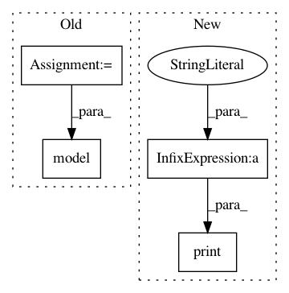

bc4dfbcc2ecae4b3a4bedc2bd18909a9208c05cb,train.py,,,#,21
Before Change
loss = 0
for i in range(subdivisions):
optimizer.zero_grad()
sub_imgs = imgs[i*sub_batch: (i+1)*sub_batch]
sub_targets = targets[i*sub_batch: (i+1)*sub_batch]
loss += model(sub_imgs, sub_targets)
loss.backward()
optimizer.step()
After Change
loss.backward()
optimizer.step()
print("[Epoch %d/%d, Batch %d/%d] [Losses: x %f, y %f, w %f, h %f, conf %f, cls %f, total %f]" %
(epoch, opt.epochs, batch_i, len(dataloader),
model.losses["x"], model.losses["y"], model.losses["w"],
model.losses["h"], model.losses["conf"], model.losses["cls"],
loss.item()))
if epoch % opt.checkpoint_interval == 0:
model.save_weights("%s/%d.weights" % (opt.checkpoint_dir, epoch))
In pattern: SUPERPATTERN
Frequency: 3
Non-data size: 4
Instances
Project Name: eriklindernoren/PyTorch-YOLOv3
Commit Name: bc4dfbcc2ecae4b3a4bedc2bd18909a9208c05cb
Time: 2018-06-01
Author: eriklindernoren@gmail.com
File Name: train.py
Class Name:
Method Name:
Project Name: IBM/adversarial-robustness-toolbox
Commit Name: 1aff940e60d7d62bd82ddf7469e666197832e212
Time: 2017-05-11
Author: valentina.zantedeschi@ibm.com
File Name: src/classifiers/cnn_unittest.py
Class Name: TestCNNModel
Method Name: test_cifar
Project Name: IBM/adversarial-robustness-toolbox
Commit Name: 1aff940e60d7d62bd82ddf7469e666197832e212
Time: 2017-05-11
Author: valentina.zantedeschi@ibm.com
File Name: src/classifiers/cnn_unittest.py
Class Name: TestCNNModel
Method Name: test_mnist